|
Dynamic content
With this tutorial you are going to learn how to create dynamic objects
and interactive gameplay content. We are going to cover the basics of dynamic
content, and also spill out some more advanced suggestions about how some things
should be done to keep your Finite State Machine (FSM) scripts and all the complex machines
maintainable. We are also going to create a door and turn it into a "prefab"
that can be easily copied around. Download the example level.
You can also download some prefabricated
dynamic objects by Remedy.
FSMs, Messages and the hierarchy
The basis of all the dynamic content are so-called Finite State Machines
(FSM). FSM scripting is especially evident in Max Payne because there are no
pre-made dynamic entities such as "a door" or "a lift" that
you could use, but rather all the dynamic content is created with dynamic
objects (DO's) and few other simple entities like triggers. These entities
can detect various events and send messages to each others to
control all the things you see happening in the game. For example when the player opens a door, it can
send
a message to, say, a huge boulder to make it roll towards the player, and when
the boulder crashes into something, it can send messages to the nearby enemies
to make them come and investigate all the noise. As you will learn in this
tutorial, it's a flexible system and can be used to construct pretty much
anything you can think of.
Basic message can look like this:
::Cellar_Room2::Enemy1->C_SetStateMachine(
CrouchAndShoot );
It consists of the receiver "::Cellar_Room2::Enemy1",
the message itself "C_SetStateMachine", and finally the
possible parameters "CrouchAndShoot".
Other examples:
::Room2::Door1->DO_StopAnimation();
parent::Enemy4->C_GoTo( ::Street1::Waypoint1,1);
Button->A_Play3DSound( dynamic, switch ,""
);
this->C_PickUpWeapon( deserteagle );
If messages point to objects that are inside MaxED, they require the hierarchy
to be defined for the receiver. You can use absolute hierarchy or
relative hierarchy from the message sender.
Example: Object A is a top-level object. It has children B
and C, and B has child D.
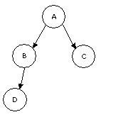
A simple
hierarchy example
The fully qualified names are:
A ::A
B ::A::B
C ::A::C
D ::A::B::D
When you define relative names, you have keywords "this"
and "parent" at your disposal. An object can refer to itself by
"this", and to its parent with "parent". An object can refer
to its child directly by using the child's name.
| Object |
Can Refer to: |
With relative name |
| A |
A
B
C
D |
this
B
C
B::D |
| B |
A
B
C
D |
parent
this
parent::C
D |
| C |
A
B
C
D |
parent
parent::B
this
parent::B::D |
| D |
A
B
C
D |
parent::parent
parent
parent::parent::C
this |
About whether you should use absolute or relative names, it
really depends on the situation. Usually when you create an enclosed machine,
such as a door, all the messages that the door sends to the different parts of
itself should be relative to ensure that when you copy the door around, the copy
will still have its messages defined correctly (=The new copy won't send
messages to the original door).
But then again if the machine sends messages outside of
itself, for example if the door sends a message to an enemy somewhere else in
the level, you might want to use absolute naming, which will ensure that the new
copies of the door will do all the same things as the original. (=All the copies
of the machine will send the same messages outside themselves)
In addition to these, there's two more keywords that you
can use some situations as the receivers; "Activator" and
"Player". For example a collision trigger can send messages to
the Activator when it's been touched, and some messages can be sent simply to
the player (The character that represents the player).
activator->C_SetHealth( 0 );
player->A_StopAll3DSounds( head );
As you can see, there's no hierarchy for these receivers. Likewise there's no
hierarchy involved if the entities are sending messages to the game modes, for
example to maxpayne_gamemode for changing the level, or maxpayne_hudmode for
hudprint, or x_modeswitch to perform a modeswitch (between game, menus and
graphic novels).
maxpayne_gamemode->gm_init(The_Next_Level):;
maxpayne_hudmode->mphm_printdirect("Don't play
with guns");
x_modeswitch->s_modeswitch(game);
The complete list of messages can be found from the
MaxFX-Tools Help.
The dynamic entities and their purposes
Here is a list of entities that you can create in MaxED and use as a part of
your FSM scripting. You can create any of these entities by pressing N
in F3 mode.
Waypoint - This entity is used for AI scripting.
Enemies can be commanded to move to waypoints.
Jumppoint - This is the entity where player spawns
to. The level can include multiple jumppoints, and you can jump between them
with insert and delete in the game, if developermode is on. The initial jumppoint is
defined in levels.txt. The level won't run in normal mode if it isn't defined,
although in developer mode you will just get an error message about it.
Enemy - A character, usually an enemy, although due
to the flexible nature of the AI scripting, any enemy can be used as a
non-harmful NPC. You can select what type of an enemy or NPC you want this to be
from the properties of the entity. (Press enter in F5 mode or click RMB
to it in the hierarchy tree and select "Properties".)
Level item - Any item you can find in the game, like ammunition, weapons or
painkillers. You can choose the type of the
level item from the properties.
Player collide trigger - A spherical trigger that
activates when the player touches it. You can change the radius from the
properties.
Character collide trigger - A spherical trigger that
activates when any character (including the player) touches it. You can change
the radius from the properties.
Projectile collide trigger - A spherical trigger
that activates when any damage-causing projectile touches it. You can change the
radius from the properties.
Action button trigger - A trigger that has to be
used by the player in order for it to activate.
Look-at trigger - A trigger which will cause the
player's character to look towards its center when player is inside it's radius.
Floating FSM - An invisible entity that can be used
as a part of the FSM logics of a system or as an emitter for sounds and particle
effects. It's basically an all-around relay entity for messages.
Pointlight - A Gouraud light for characters and the
desired dynamic objects. The light itself is static in the world and cannot be
moved. More about it in Dynamic lighting section of the advanced
lighting article. (Note that you
can make moving dynamic lights that affect the geometry by using such a particle
effect)
Creating DOs
In addition to the entities listed above then there's so called dynamic objects, which
make up a big portion of all the dynamic content . These are basically meshes that have some functions. All the doors, cars, crates, lifts and
choppers you see in the game are dynamic objects which have different FSM
logics and animations put in by the mapper. As mentioned before, there is no separate entity for
"Door" or "Car", everything is the same. A breakable crate is a
dynamic mesh which hides itself and creates a particle- and sound effect when
it's hit. A chopper is a dynamic mesh which has lots of invisible parents that
animate and move the chopper in the sky in a believable manner. Any model that
moves or interacts with something in the game is a dynamic object.
Then into the creation of DO's. Let's try and make a breakable window.
First we need some sort of a level to play with. Just create two rooms with a window opening between them (and a 1.5m x
2.5m doorway), and create a
flat polygon there to act as the glass for the window (You can get the
materials from the example level of this tutorial). Create a flat polygon by drawing the shape in F3 mode onto the grid - just like you would
create any object - but hold down shift when pressing RMB.
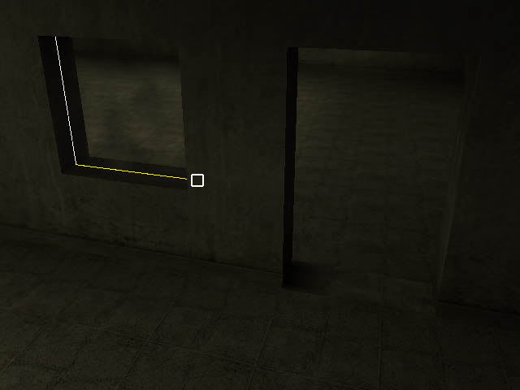
When you import the materials from the example level, click on the glass
material in the material window with RMB and make sure Dualsided and Alpha
test material flags have been set.
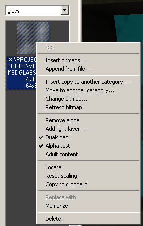
If it happens that you can't see the glass in the editor when it's Alpha
test, check MaxED's "Local Preferences". There's a value called
"AlphaTestReference", change it to, say, 128 (restart of MaxEd may
be needed for this to take effect). This will change the
way the material is rendered in MaxED, but don't forget that the game engine
itself will draw Alpha test materials differently, so don't worry if it
doesn't look very good in the editor.
The glass polygon is still static and doesn't really do anything special
yet, except let the bullets go through it because of the material category
properties. Let's turn the object dynamic by selecting it in F5 mode, and
pressing D. The same button also turns dynamic meshes into static ones.
MaxED asks if you want to keep the lightmaps of an object when you turn it
dynamic. Let's answer yes. DO's generally look better with lightmaps.
Setting DO properties
Now let's check out the rest of the object properties for dynamic objects.
Just like with any object's properties, select the object in F5 mode, and
press Return. You can rename the object now into whatever you desire,
and under the Statistics tab there's some flags for us to check.
Something like this:
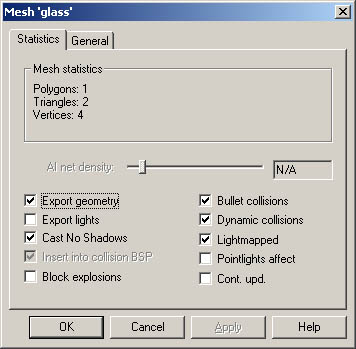
Explanations:
Export geometry - This defines whether or not to export the geometry
of the object to the .LDB file. By disabling this flag you can, for example,
keep pieces of furniture around the .LVL -file while they won't get exported
to the game. This flag is enabled by default.
Export lights - When you make a polygon emit light (other than
black), a dynamic
cone-like light (that affects only characters and the desired DO's) will also
be created onto it. With this flag, these lights can be excluded or included
to the export. These cone-like lights are however slower in runtime than pointlights,
so it is suggested you use them instead. You
can see the dynamic lights by selecting View > Visualize lights. This flag is disabled by default.
Cast No Shadows - Even if an object has lightmaps of it own, it can
be made not to cast any shadows. This should be set on any DO's that move or
disappear at some point (Doors, breakable crates, moving vehicles). Disabled
by default. All objects will cast shadows in preview rendering.
Insert into collision BSP - This affects only static objects. A
static object can be excluded from the collision BSP by this. If you make very
small objects with lots of faces, it is usually a good idea to set this flag.
It's good speed wise, and also in many situations it makes a smoother gaming
experience when you don't get stuck onto all the little things lying on the
floor. Enabled by default.
Block explosions - This defines whether or not the DO blocks
explosions. Big things like doors should block the explosions, but small stuff
like little bottles shouldn't. Also if an object is blocking explosions, it
will also block them from itself, thus not getting any damage from explosions.
Enabled by default.
Bullet collisions - You can set the bullet collisions with this
flag. Disabled by default.
Dynamic collisions - You can set all the other collisions but bullet
collisions with this flag. Disabled by default.
Lightmapped - This defines whether or not the DO uses lightmaps.
If it doesn't use lightmaps, it is lit merely by dynamic lights.
Pointlights affect - With this flag you can make the dynamic lights to
affect the DO even if it uses lightmaps. This is a bit of a hack and it's not
recommended to be used often.
Cont. upd. - Continuous update, If the object is animating, setting this flag will make
the object animate all the time even when it's not in the view cone. This flag
doesn't have any effect on non-animating DO's.
TIP: You can make all the names of the DO's visible in the rendering window
by selecting View > Dynamic Object Text Modes > Name
Finite state machine scripting
By finite state machine scripting, we mean putting in the messages that link
the entities together. Or as it is in the case of our example, the breakable glass, putting
in messages that the glass sends to itself. We are going to add messages to make
the glass disappear and to play some breaking particle effects. First select the glass, and press 4
to bring up the FSM dialog.
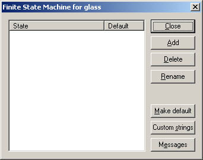
In this first dialog we can add states to the object. The FSM scripts
we need for a breakable glass won't require any states, so we won't add any. We
can also bring up the Custom strings dialog from here, but we won't need
any customs strings now either. Let's just press Messages-button.
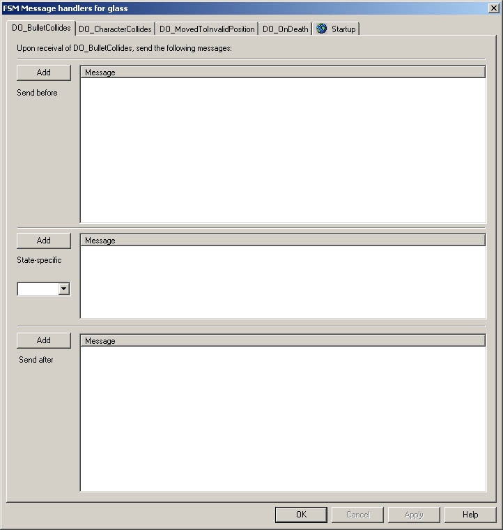
The tabs you can see in the upper part of this dialog are events that
can occur to the object. In this case there's 5 of them:
DO_BulletCollides - Send messages if a bullet collides the object, or
it receives damage by explosion.
DO_CharacterCollides - Send messages if a character collides the
object.
DO_MovedToInvalidPosition - Send messages if the object is animating
and something blocks it's path.
DO_OnDeath - Send messages when the hitpoints of the object are
depleted.
Startup - Send messages at startup.
There's three similar message boxes in all the tabs. The first box is for
messages which are to be sent first if the given event occurs. The second box is
for messages that are sent only if the DO is in a specific state when the
even occurs. The third box is for messages which are to be sent after
the state-specific messages (Sometimes the order does matter). Within the
message boxes, the messages are also sent in the order they are listed, from up
to down. You can change the order of the messages with PageUp and PageDown.
Try adding some messages into the message boxes just to see how it works. For
example this->do_stopanimation(); or this->a_stopall3dsounds("");
You can add messages from the Add-buttons. You can delete messages by
selecting them from the message boxes, and pressing Delete. You can cut,
copy and paste messages directly from and into the message boxes with CTRL-X,
CTRL-C and CTRL-V.
Note however that you can't add any messages to the state-specific message
boxes before you have some states defined.
Notice also that pressing TAB completes object and message names up to
as far as they logically can be completed. Example: you're editing a new
message on an object with a child called "the_door". Typing in
"t" and pressing tab will complete the line to read "th"
(because after that the strings "this" and "the_door"
differ). You get the picture.
Ok, after you've got the hang of it, delete all the messages you added, and
let's make the glass breakable. We can make it break by first hit, in which case
we'll simply use DO_BulletCollides -tab. When the glass breaks, we want
it to disappear, make a breaking sound, and emit a particle effect. Let's add
these messages:
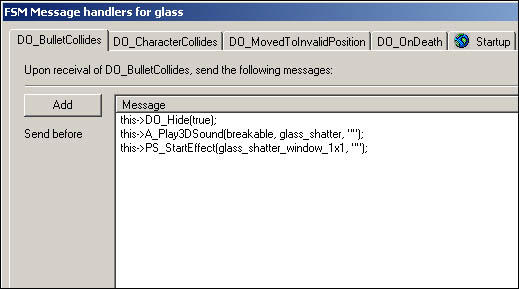
About the messages we used; DO_Hide(true); obviously hides the
receiver. DO_Hide(false); would unhide it.
A_Play3DSound plays the desired sound from the receiver. Breakable
is the sound category here, and glass_shatter is the sound block inside
the category. You can see all the sounds there is at your disposal by extracting
the Max Payne .RAS files with RASMaker, and browsing your way to the Max Payne
database sound directory ...\data\database\sounds\. There's multiple .txt
files in there, which all represent a sound category. Opening
"breakable.txt", you will find sound blocks, firstly
"videotape_break", and also somewhere in there
"glass_shatter". The third parameter for this message is the bone
where to emit the sound from. It makes a difference only for characters. For
DO's, where there are no bones (only characters have bones), we just leave it empty with quotation marks.
PS_StartEffect emits a particle effect from the object. There are no
categories there, just the name of the particle effect. You can see the names of
all the particle effects from the Max Payne database once again ...\data\database\particles\particles.txt.
Particle effects are always emitted from the center of the object, and their
orientation is adopted from the orientation of the object's pivot point. There's
no way of directly seeing in the editor what is the internal orientation of the
given particle effect though, so that is just something you need to know or try
out. For most effects in Max Payne database, if there's a direction
for a particle effect, it's towards the Z-axis. You can see the pivot point of a
DO by selecting it in F5 mode. The yellow line is the Z-axis. Now, in
order the glass_shatter effect to have a correct orientation, let's set the pivot point
of the glass to a correct orientation. We need to have the Z-axis pointing straight
outwards from the surface normal. Align the grid on the surface of the glass,
and move it in F12 mode so that the grid center is positioned on the glass surface. The
origin of the grid shows its axis's, and now you can see that the yellow line is
pointing straight outwards from the glass surface. Then go to F5 mode, select
the object, and press P. This will make the object to adopt the pivot
point from the grid.
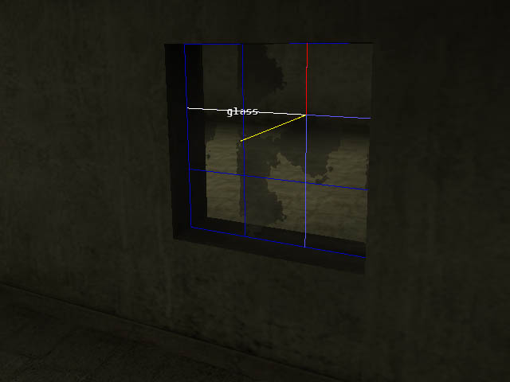
Hopefully that was not too confusing. Now we get to try out our level, so
export the level and load it up to the framework.
At this point, we should see some
tips about exporting the levels. Generally when
doing dynamic content, you need to export often, and you want to make it as easy
to you as possible. Firstly, you should run the game with command line options
as below:
maxpayne.exe -developer -developerkeys -screenshot -window -nodialog -skipstartup
This will make the game run in developer mode with developer keys, it will be
windowed, and it will skip the startup dialog and the video. Also if you are
running Windows2000, you want to make a .bat file that runs Max Payne as below:
start /low maxpayne.exe -developer -developerkeys -screenshot -window -nodialog -skipstartup
This will make the game run in the lowest priority setting automatically
always when you run it, thus when the game is on the background, it won't take
any resources from MaxED. Although depending on your video hardware and drivers,
you might not be able to run MaxED and Max Payne simultaneously, or at least
either one of them can be very prone to crash. Using low color depths to save
video memory might help somewhat.
Also it is sometimes a good
idea to add your level to the menu.txt so that you can conveniently load it up
through the menu (Take a look at menu.txt of the BasicRoomExample that came with
the game).
Now when you get the game running, you can try shooting the window and it
should break. Needless to say, it's usually a good idea to quicksave as soon as the level has
loaded up if you are testing some dynamic content.
If you still want to play around with the window, you can try adding
hitpoints to it. Add this->DO_SetHitpoints(15); to it's StartUp
tab, and then move all the messages from it's DO_BulletCollides tab to DO_OnDeath
tab. This is a special event which is triggered only when a DO has hitpoints and
they are depleted in startup. Obviously you can add hitpoints to an object upon any event
that occurs in the level, not just at its own startup.
Another DO example, creating a door
Next let's create a functional door. First, if you didn't make a
doorway to your level yet, let's do that. Simply Boolean a hole between the
two rooms. Do not forget though that you can't boolean two rooms together
if they are sharing an exit, so if you made an exit to the window opening, you need to delete
it (in F4 mode) before you can Boolean another hole between the rooms. In Max
Payne the standard doorway size is some 1.5 x 2.5 meters.
Model a door for the doorway, and turn it dynamic by pressing D.
Then check the object's properties, and make sure it's got the following flags
enabled.
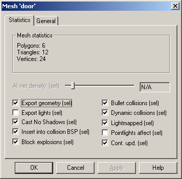
Now it might be a good idea to render lightmaps onto the door by selecting
it in F5 mode and pressing R. Just make sure you don't have Hide
other objects enabled in the preferences, or the door won't take any
light sources into account. In general you should relentlessly exploit the
ability to render lightmaps on single objects or single rooms at a time, and
fix the possible anomalies by copy/pasting lightmaps.
Now you should be seeing something like below, and we can start adding
functionality to our door.
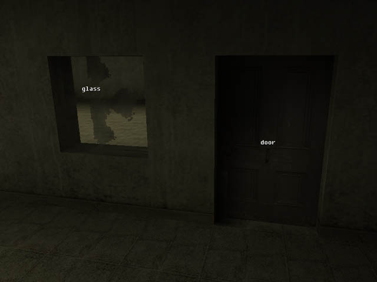
Do notice that there is countless ways of making doors in MaxED. You can
make sliding door (the easiest door type) or you can make regular doors that
rotate open. The doors can be swinging "kitchen doors" that close
automatically. The doors can open only one way or both ways. There can be dual
doors. You can require the player to use the door before it opens, or you can
make a control panel for the door. You can do almost anything your imagination can conceive. You can try
and make all the super complex sci-fi doors you ever imagined. You know, the ones that
open for 10 minutes with a lot of hissing noise and moving parts. But for this
tutorial, we'll settle for doing the most typical door we had in Max Payne.
That's a regular door that opens when any character runs against it. It can
open both ways and it stays open.
Let's start by adding animations to our door. Briefly, the animation system
in MaxED works so that you define keyframes (different positions in the
worldspace) for an object, and then define animations between the keyframes.
And since the door is going to be rotating, we are going to have to place
its pivot point correctly. All the rotating objects always rotate around their
pivot point, and if the pivot point is in the wrong place in our door, the
door will move around from it's location while it's rotating. The location of
the pivot point of the door of course depends on what kind of door we are
making, but since we are making a door that opens both ways, we should place
it as below. In real life, you do not see much doors that are hinged like
this. Also if you make the door frame to match the door exactly like in here,
the meshes are going to overlap when the door opens -- nobody will notice :-)
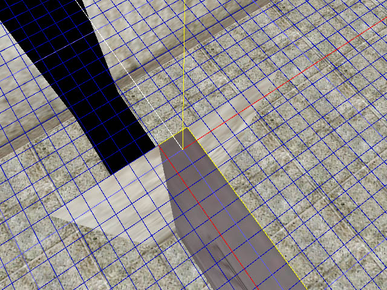
So move the grid center as it is in the picture, select the door, and press
P to adopt the pivot from the grid.
Next we get to add the actual keyframes. Select the door, and press TAB to bring up the keyframe dialog. There's one
existing keyframe there. Rename it as "closed". Then press Add.
It asks for a name for the new keyframe, so let's name it as
"opened1".
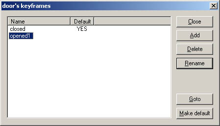
Next we need to define what is the position of the door in the
"opened1"-keyframe. Double click on the name of the keyframe to make
sure it's the current one, and close the dialog. Now we need to rotate the
door, and there's few things to consider when rotating objects in MaxED. First
of all, around which point in the the world to rotate the object? We
can rotate objects around any of their vertices, or around their pivot
point. Rarely used is the option to keep Shift pressed while
rotating, which makes the object rotate around it's geometry center. And we can select whether to rotate by world axis, or by the object's local
axis. Or obviously we can make a temporary object anywhere in the world and
rotate any other object around any of it's vertices. It's easier to just try
out rotating things than to try to explain it. First take a look at the lower
right corner of the rendering window in F5 mode. There it indicates the
current rotation mode. In this picture it says VTX (vertex) and
WLD (world), which means if you now rotate the door, it will rotate around
the selected vertex and by the world axis. Try it around, you can rotate with
keys X, Y and Z, or optionally with 1, 2,
and 3. Might be a good idea to save before you mess around too much
though.
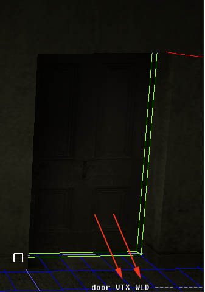
You can toggle between vertex and pivot rotation with A, and between
world and local rotation with W. Change the modes and try out rotating
the door around again.
Got it? Ok, good, now as your door is "all over the place", it's
a good idea to revert to that save you had before you started messing around
with rotating things. Then make sure pivot rotation by world axis is selected
(PVT WLD). Select the door, press down Y (or 2), and move the
mouse sideways until the door is in its desired position.
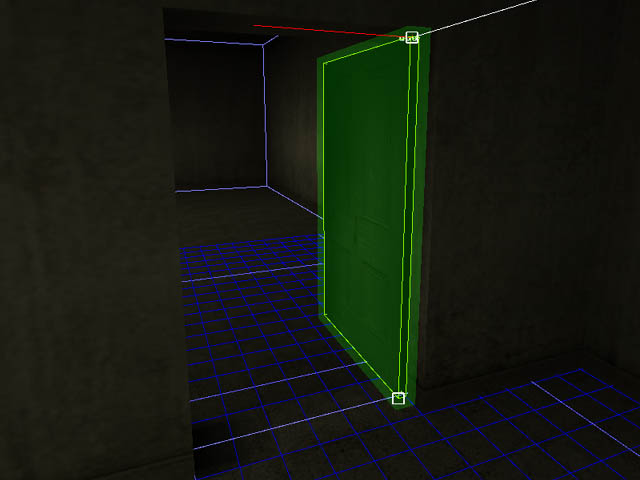
TIP: You can change the angle snap from the Preferences. It's a setting
called Kbd Tilt angle, but it affects to all rotations in MaxED,
including polygon tilting. Also if you've got an exit on the doorway, the door
might appear to partially disappear. This is nothing to worry about though,
but if it cause problems, you can turn the exit acceleration off from the
Preferences.
Now we have the first keyframe in position. Since we want to door to open
both ways, we add another keyframe to the opposite direction. Open up the
keyframe dialog (TAB), add a new keyframe called "opened2",
close the dialog, and rotate the door 180 degrees around.
Got it? Good, then we can add the animations. Select the door, and press Shift+TAB.
You get the animation dialog, in which you can add, delete and rename
animations. You can change the keyframes and the length of the
animations, and you can manipulate the animation graphs. You can also
enter the message dialog from here.
Press Add-button to add an opening animation. Select
"closed" as the Start keyframe and "opened1" as the
End keyframe, and press OK. Now it might be a good idea to rename the
animation as "open1", and alter it's length to, say, 1 second.
Also add the animation for opening to the other direction. Obviously
otherwise do all the same, but select "opened2" as the End keyframe.
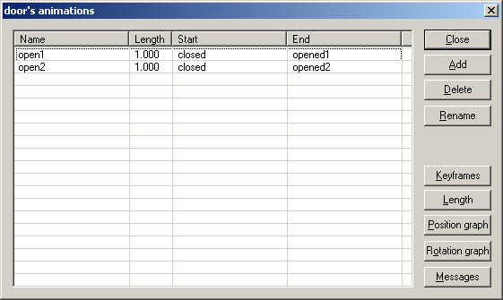
Now you can view the animations by double-clicking on the name of the
animation. Also try manipulating the rotation graph to see what it does. It's
actually pretty self-explanatory. Try pressing Ctrl+Q in the rotation
graph dialog. Also you can change the sample rate of the animation by pressing
Ctrl+numpad/ and Ctrl+numpad*. You can also copy and paste
animation graphs with Ctrl+C and Ctrl+V
Next let's add triggers for the door. You should add triggers to the both
sides of it. So align the grid on the door, and add a character collision
trigger (N in F3 mode) on the middle of the door. Name it as
T1, and change it's radius to 0.2m from its properties, and then lift
it up from the door a bit. Repeat to the other side. It's also be a good idea
to group the triggers to the door directly. (Select a trigger, press G,
and click LMB to the door)
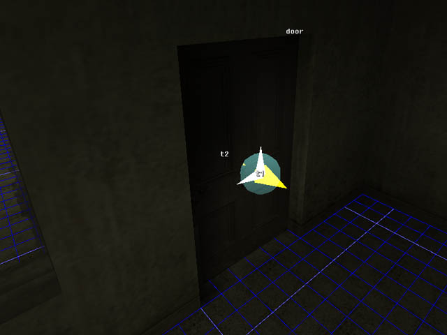
Then open the FSM message dialog of either one of the triggers (4 in
F5 mode). When any character touches the trigger, we want it to animate the
door. So, add message parent->do_animate(open1); to it's T_Activate
tab. Make sure though that the animation indeed is "open1" that you
want the door to execute. It's obviously "open1" for the other
trigger and "open2" for the other.
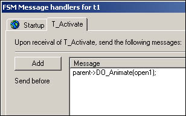
Then open the FSM message dialog of the door, and there you will find tabs
called Animation(open1) and Animation(open2). Add these messages
to the both tabs:
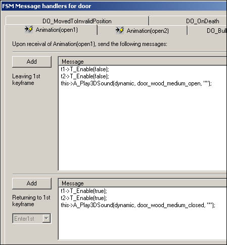
T_Enable(false); messages are for disabling the triggers as the door
opens
A_Play3DSound(dynamic, door_wood_medium_open, ""); is for
playing a sound effect as the door opens.
These messages above are in a message list called Leaving 1st keyframe,
which means the messages are sent at the start of the animation. There's also Reaching
2nd keyframe message list that sends messages at the end of the animation,
but we won't need it now.
The rest of the messages are in a message list called Returing to 1st
keyframe, which means these messages are sent if the given animation
starts to play, but is ordered to return back to the beginning for some
reason. So T_Enable(true); messages obviously enable the triggers if it
happens that the door closes. And also a sound effect is played here. Now
don't forget to copy these messages to the "open2" tab as well.
Still one more message to add, and it goes to DO_MovedToInvalidPosition
tab. As you might remember, this is event is triggered if something blocks an
animation. Let's add message this->DO_InvertAnimation(); there. This is the
message that makes a currently playing animation to return to the first
keyframe.
Now you can export the level and try it out! You should add a jumppoint to
the other side of the door as well so that you can jump there in the game
(with insert or delete) to make sure the door works from both
ways. Also try typing DrawFSM to the console to see visualizations of
the triggers and DO's, and to see if the triggers disable themselves as you
intended them to. You can disable it with DrawFSM_Off.
Then we have just one problem left, we need to make sure there's no AI net
passing through the door when it's opened. Otherwise enemies might run against
the opened door like a bunch of suicidal lemmings. There's a special material
category called ai_node_collision_nodraw, and if you texture an object
with a material in this category, it means that AI nodes will collide against it. Without
going into the details yet, you fix this problem by adding these little AI
blocks to the positions where the door would be when it's open. Remember to do
this to the both sides of the door.
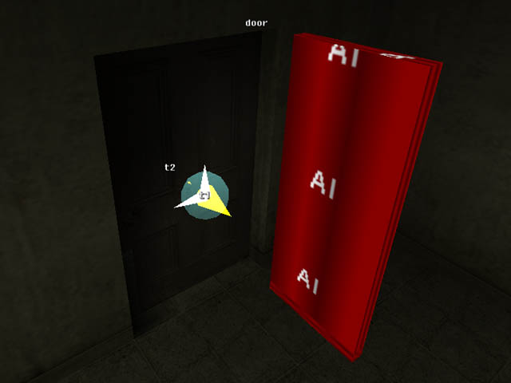
Let's not get into calculating AI network yet, we'll get to that with the AI
tutorial, but for now, let's settle for this.
TIP: Now that you've got a DO with keyframes with it, you might wonder how
to move and rotate the whole object around, not just the selected keyframe.
You can do that by pressing down Ctrl while moving objects. Otherwise
all the moving and rotating commands are just the same. Although notice that
you can't use Z or X for rotating objects while keeping Ctrl pressed, because
these would equal to Undo and Cut. Even though there is no undo in MaxED,
Windows takes over when pressing Ctrl+Z and it doesn't work. You should
use Ctrl+1, Ctrl+2 and Ctrl+3 instead when rotating
objects with keyframes.
Coder attitude with FSM's
You have probably already realized that there are countless of ways to make
same things happen in Max Payne, and it might be that we did things here a bit
differently as you would've liked to do them. For example, you might want to
disable the door triggers in their own t_activate tabs. However if you do
that, you still need to disable both triggers always when either one is
touched. In general when doing FSM's and you aren't sure how you should do
something, try to do scripts so that messages that do the same thing aren't
sent from multiple different places or objects. For example the door we
did, as the
animation itself disables the triggers, it is easy to add more triggers all
over the place. All you need to add is that you send DO_Animate(); message to
the door from the new trigger, and disable the trigger via the door's
animation (and enable it back if the animation returns to the 1st keyframe). This
way you can keep things structured logically and in the same place even if you
do additions to your FSM's.
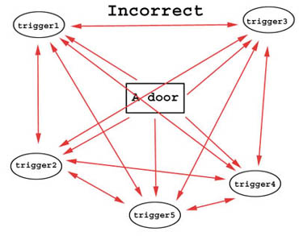
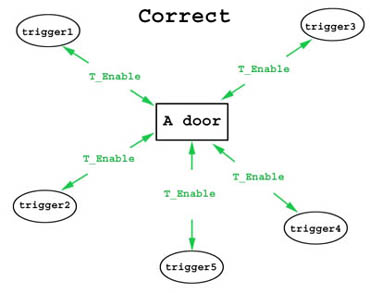
The door we did is not the best example to describe the importance of the
structure in FSM scripts, but above is a door that is controlled by five
triggers, and two ways of enabling and disabling the triggers. As you can see,
you can make simple things surprisingly complicated if the structure is wrong.
Because of the flexibility of Max Payne's FSM scripting, it is perfectly
possible to create spaghetti and get yourself into troubles if you don't pay
attention to how you do things. This is especially true when we get to
advanced AI-scripting. Putting some time into thinking about this is
definitely worth it. If you just fire away and send messages from whatever
object first comes to mind, you will soon find yourself typing in a lot more
messages than you should, and eventually you will spend 10 times more time
fixing bugs than it would've taken to structure it properly.
Talk about fixing bugs, there's some methods of finding them from your FSM
scripts. You can try this with the level you've done so far. One aid is taking
an FSM dump of the level. You do this in movement mode (space) from Mode
commands > Dump FSMs as XML. You can seek for errors from there. Also
in the game, you can type messagefilter_levelonly to the console to get
a continuous dump of the messages moving in the level to the console. You can
get a filedump of the console with x_consolemode->cm_dumptofile(
my_dump1.txt );. And don't forget Draw_FSM that was mentioned
above.
Also something you will be using a lot for testing and debugging your
dynamic content is Partial export. You do this simply by selecting a
room or multiple rooms (by pressing down Shift) in F5 mode, and then
selecting Export selection from the Mode commands dialog. Notice
however that the selection must contain a jumppoint.
Exit disabling
Exit optimization is a powerful optimizer already on it's own. In some cases you might want to help it
even more to gain some extra speed by manually opening and closing exits. The most obvious use for disabling an exit is when there's a
door that is closed on top of the exit, especially if the door happens to be a swinging door that
closes automatically.
Let's add exit disabling functionality for our door.
First make sure the exit is totally enclosed by the door at it's
"closed" keyframe. If it isn't, either delete the exit and create a
new one to the correct position, or move the door so that it encloses the
exit. Then enter the door's keyframe dialog (TAB) and double-click on
either one if it's "opened" keyframes (we do this just so that we
can actually see the exit).
Now make sure that "Select culled polygons" is not enabled in the
Preferences. If it was enabled, it would make it harder to do what we'll do
next. Enter F4 mode, point to the exit and press Enter. This will bring
up the exit renaming dialog. Name it as toggle1. Now go to the other
side of the exit, point to the exit, press Enter, and rename it with
the same name. That's right, there's not actually just one exit there, but
two! The reason we can name them with the same names is that they belong to
the different rooms. And now as there's two exits, it is possible to create
doorways that are disabled only from the other side. The reason we disabled
"Select culled polygons" was that if we had it enabled, MaxED could
select either one of the exits regardless of in which side we were ourselves.
Let's still rename the rooms in this level so that we know what they are
called. The other one is probably already called Startroom (if it
isn't, rename it), and let's rename the other one as room2. Now open up
the FSM message dialog of the door, and to its Startup tab add
messages:
::startroom::toggle1->EnableExit(false);
::room2::toggle1->EnableExit(false);
This will close the exit at the startup. Then we need to make sure it gets
enabled as the door opens, so to both of the animation tabs add
::startroom::toggle1->EnableExit(true);
::room2::toggle1->EnableExit(true);
Obviously put these into the Leaving first keyframe message list.
Then still just to make it perfect, let's disable the exits if the door closes
because of something. Just copy the messages from the Startup tab to the Returning
to 1st keyframe message list.
Now just export the level and try it out. You can make sure the exit is
disabled when the door is closed by typing maxpayne_gamemode->gm_drawoutlines(1);
to the console. You can see all the outlines that the engine draws through
walls, and if you did things correctly, you can see it doesn't draw any
outlines through the door before it's opened.
FSM states and custom strings
Let's use an existing object for clarifying the use of FSM states
and custom strings. Open up the example level of this tutorial,
which you hopefully downloaded before you got started. If not, download it
from here. You will find a breakable crate
from the level. As you can see, the crate breaks in 5 different pieces. 4
sides and the top. What we had to achieve here was that the top piece falls
down if any of the two other pieces were destroyed. Opening up the FSM dialog
of the top piece, you can see it has some states and custom strings.
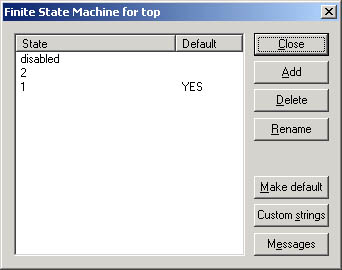
If you open up the message dialog of any of the side pieces, you can see
that when they break, they send FSM_Send( add ); to the top piece.
Opening up the message dialog of the top piece again, you'll find a tab there
called FSM_Send(Add). Yes, there's a connection between there. This is
a custom event for the object that is triggered when it receives FSM_Send(Add);
from somewhere.
As you can see from the FSM dialog of the object, it's in state called 1
by default. In it's FSM_Send(Add) tab you can see that if it triggers the
event while in state 1, it will send a message FSM_Switch(2);
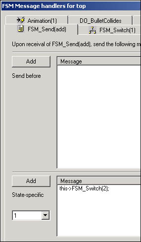
This means it will change its state to 2. In other words, this
happens when the first one of the side pieces is broken. Then let's see what
would happen if the top piece would receive FSM_Send(Add); now again,
when another second side piece breaks. Select "2" from the "state-specific"
drop-down list of the FSM_Send(add) tab.
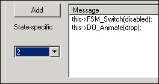
As you can see, when the second piece breaks, the top piece receives
FSM_Send(Add); for the second time, and it will animate itself to drop down.
It will also change its state to "disabled" so that none of the "Add" custom strings it will be receiving from now on has any effect.
Custom strings are especially useful for structuring things properly. You
can keep the messages where they'd logically belong. The camera prefab (look
below) is a good example of this, there is a number of messages to send when
you startup a cinematic. Now you can either send them from whatever triggers
the cinematic (there can be multiple events that do that), or then you can just send
one custom string to the camera from wherever and you'll know where the messages
are when you need them. If you have multiple events that might trigger the
camera, you can easily use "enabled" and "disabled" states
for the camera, so that it switches itself to "disabled" when the
cinematic starts, and all the custom strings it might receive while in the
cinematic, it will ignore. And/or you can of course disable all the triggers
from the camera's "start" custom string tab.
Exploiting prefabs
Prefabs are some commonly used objects that are prefabricated and
ready to be put into the levels. This obviously saves a lot of time and nerves
of the mapper as he doesn't have to make every single door from scratch, for
example. For the end of this tutorial, let's cover some preferred ways of
using prefabs. As already mentioned, There is no special prefab-system or UI
in MaxED. But if you make your dynamic objects cleverly and prepare them
properly, you can reach something that can be described as a prefabs
system.
How to make one? Open up the level where you made your door again. After you have tested your door and you
are sure it's 100% working and all, let's
make a prefab out of it. First we should create a handy parent for the
whole machine, and group everything to it. Create an object next to the door
with dummy material (If you don't have one yet, add dummy material
category and import some texture in there). Then set its pivot point to some
convenient corner that you want to use as a reference point when
copying the object. Note that you can't see the pivot points of the static
objects, but that doesn't mean they don't have one. Yu can set
it just like you would for a dynamic object; move the grid's pivot to the
desired position, select the object and press P.
TIP: If you have to group objects that are in different rooms together, you
can do it by first selecting the desired children, then moving to the room
with the parent, entering F5 mode, and selecting Mode commands >
Grouping > Group selected. In other words; don't use the keyboard
shortcut.
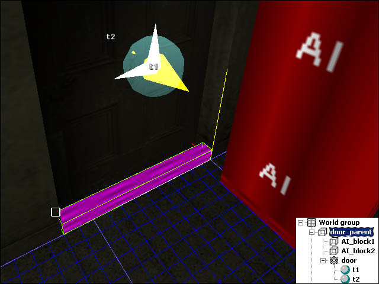
Next select the door parent dummy in F5 mode, and copy it to the
clipboard (Ctrl+C). Now you can either make a copy of the door by
pasting in F5 mode, when the new door appears to the same position as the
original and you have to move it a new position with arrow keys, or you can
paste it in the F3 mode, when it will get pasted to the grid tick by the
reference point. Try it out. You can delete objects with their children in F5
mode by Ctrl+Delete; a handy feature once you've got dozens of doors
around the room.
To create yourself a library of prefabs, import all the materials that you
need to separate empty document (insert them from your current file) paste the object (in this case,
the door) into that somewhere around the world origo. Make sure,
that in that level there just the door object with all the necessary stuff,
but no room or something other extra around it. Finally it is wise to purge all
unused materials to make sure that the prefab has just the textures it needs.
Then, as you need a good working door when you are working with some other
level, just use File > Insert document... to get it in. This
inserts the door and those materials that are not yet there. If the your door
prefab was near the world origo, you should be able to locate it pretty easily
(Use F12/C to reset the grid and the camera) after insertion. Then, just cut
it and paste around as usual (F3/Paste to is good for this). If you do lot of
different general objects and put them into some folder with descriptive
names, you have something that can be described as a library of prefabs.
With a door though there's typically one thing that causes problems when
it's prefabricated; it's usually placed on top of an exit. The game will complain
if you've got static objects going through exits, or static objects that are
grouped to an object in some other room (in this case the door parent might go
through an exit, and the other one of the AI net block definitely will be in a
wrong room for its grouping). It is perfectly fine for dynamic objects to go
through exits, but when there's static objects involved, you might have to do
some regrouping after you've pasted the prefab to its location. Also if you
need to rotate the prefab, don't forget to rotate all of it's keyframes (press
down Ctrl while rotating).
Prefabs from Remedy
Here is also some prefabs that were used in Max
Payne, you can take a look at them and try to figure out how they work.
Cameras - Two cameras that work by custom strings. It's easy to copy
more cameras for your cinematic. The animation in the camera defines the
length of the cut for each camera, and obviously you can just add keyframes to
the camera to move it. Or you can make a "camera_mover" dummy to
which the camera is grouped to.
Ceiling fans - Three breakable ceiling fans
Crates - A set of breakable crates.
Exploding barrels - Four different kind of exploding barrels.
Fire extinguisher - Breaks when the valve is hit.
Gas bottles - Various gas bottles. Break when the valve is hit. Some
fly out, some rotate, some just explode.
Gasoline canister - A simple gasoline canister that explodes.
Small breakables - Some bottles, a drinking glass and a porcelain
plate.
Soda machine - A vending machine.
Sodacans - Four cans of soda. Two of these fly in the air when hit.
Swing door - Kitchen doors that close automatically.
TV's - Four similar TV's with just different colors.
Valkyr containers - Breakable Valkyr containers. The one that is
standing tips over when it breaks.
Wooden door - The door we did in this tutorial as a prefab.
--- --- ---
Chopper - Due to numerous
requests by modding community, the police helicopter prefab used in the game
is now available. You should be warned that this is one of the most complex
dynamic objects used in Max Payne. Understanding the operation requires fluent
animating and FSM scripting skills.
|